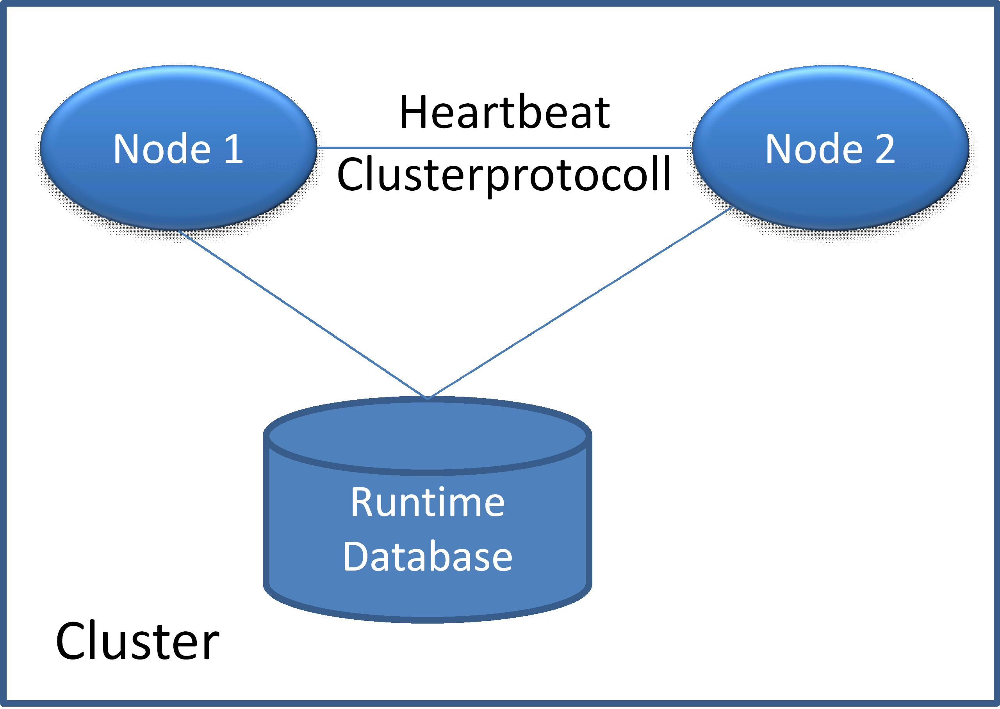

Architecture

Topic content
The following picture gives an idea of the cluster architecture:

Figure 4. Heartbeat and cluster protocol
Whenever Orchestra nodes are configured to work as a cluster, Orchestra has to do additional operations that are only required in cluster mode. These additional operations are:
•Maintaining the integrity during all operations that affect all cluster nodes. E.g. Deployment, Redeployment
•Heartbeat: Check in a regularly interval that the nodes are available and can work
When the cluster detects that a node has gone or is dead, a cluster switch is performed. In case of the cluster switch all running persistent processes are automatically shipped to the online node.
Orchestra implements an active/active cluster. Both nodes can work in parallel and serve the same scenarios.
|
Note: If you want to implement an active/passive cluster, you do not need the orchestra cluster system. An active/passive cluster can be simple operated by setting up to orchestra instances that access the same database. You have to ensure that only one of the nodes active and running. Should this node crash, the node is stopped and the other node is started. This can be done by standard cluster software provided by linux or windows. Also an loadbalancing is not possible in this mode. |